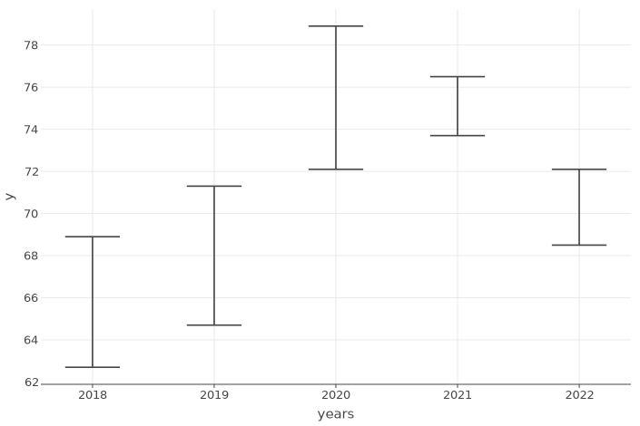
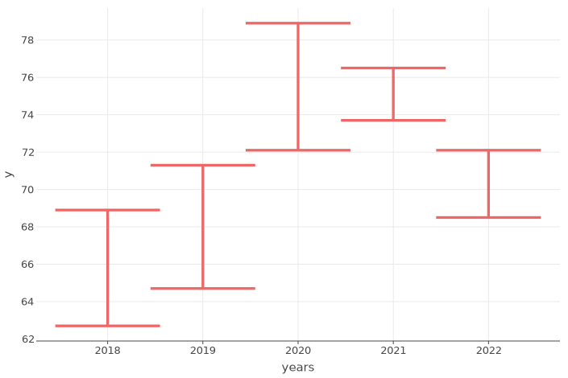
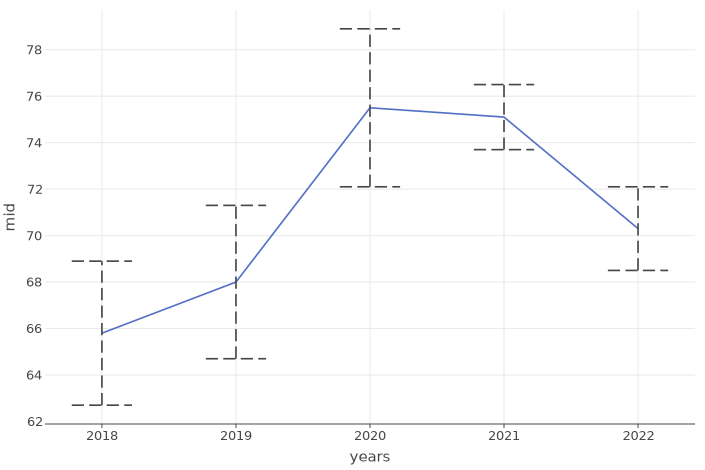
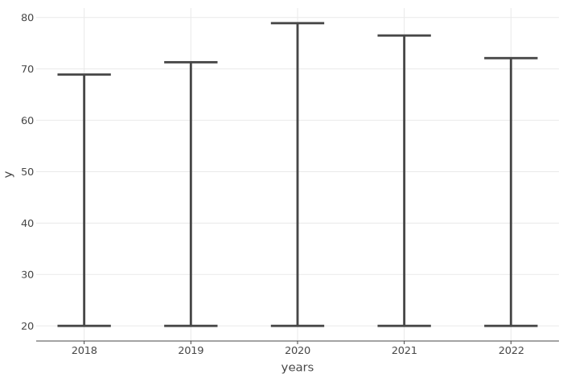
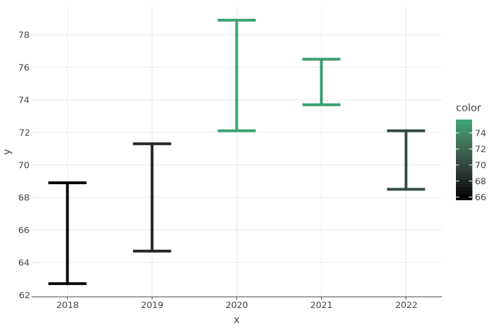
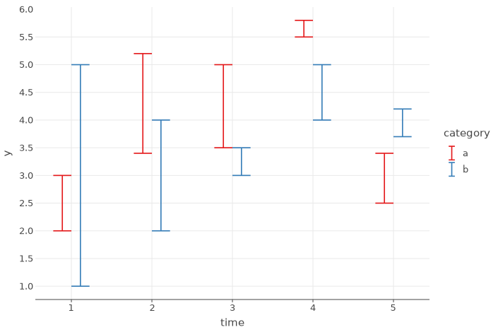

Examples of Kandy
Table of Contents
User Guide
- Quick Start Guide — Notebook / Datalore
- Geoms
- Statistical
- Multiplot
- Layout customization
- Other guides
IDEA examples
lets-plot-simple —
The following is an example of using the kandy-lets-plot library in an IntelliJ IDEA project.
echarts-simple —
The following is an example of using the kandy-echarts library in an IntelliJ IDEA project.
Notebook Examples
Line
Area
Bars
Points
Error Bars
|  Simple ErrorBars |  ErrorBars Settings |  ErrorBars with Line |
|  Fixed ErrorBars Coordinate |  BorderLine in ErrorBars |  Grouped ErrorBars |
| ErrorBars with Boxplot |
Ribbon
| Simple Ribbon | Ribbon Settings | Ribbon with Line |
| Several Ribbons | Function Ribbon Graph | Regression Confidence Band |
Boxplot
| Boxplot of Experiments | Boxplot Life Expectations by Country | Boxplot Categories |
Tiles
| Basic Tile Plot | Tiles Settings | Fixed Tiles Coordinate |
| Tiles Gradient | Tiles with Color by Category | Basic Heatmap |
| Ktnb Logo Tiles |
Histogram
| Histogram Simple | Histogram Settings | Histogram Grouped |
| Histogram With Line |
Density Plot
| Density Plot Simple | Density Plot Settings | Density Plot Grouped |
| Density Plot With Histogram |
Count Plot
| Count Plot Simple | Count Plot Settings | Count Plot Grouped |
| Count Plot Horizontal |
Heatmap
| Heatmap Simple | Heatmap Settings |
Layout
| Base Layout Settings | Subtitle And Caption | Axis And Legend Configuration |